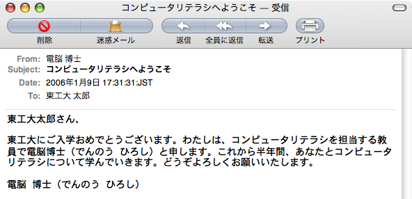
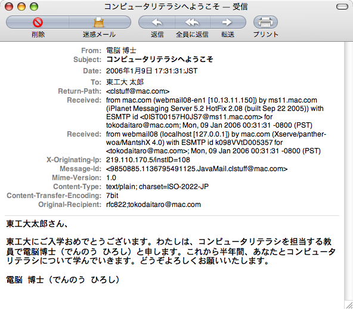

電子メールは郵便物における表書きに相当する定型的な書式と手紙の内容にあたる本文から構成されます。定型的な書式には、宛先と差出人、要件などを書きます。本文は文字表現が基本なりますが、特に定まった形式はなく自分の心情を自由に表現することができます。
電子メールのメッセージは、さまざまな点で郵便物と類似しています。封筒に入った便箋について考えてみましょう。手紙の内容は便箋に書かれています。多くの場合、便箋には文章が書かれています。便箋に文章を書く方法には、いわゆる「手紙の書き方」で説明されるようなやや型にはまった書き方もありますが、基本的に自由に文章を書くことができます。
一方、封筒の書式は定型化されています。定まったやりかたで送り主と宛先の連絡先を書かなくてはなりません。宛先の欄に誤って送り主の住所を書かれた封書は送り主に戻ってきてしまいます。また、速達であれば郵便物に赤い線を引き、航空便であれば目立つ個所に「航空便」とか「Air Mail」などと書く習慣があります。さらに、封筒には普通、切手が貼られ、そこに郵便局の受領印が押されます。連絡先が書き誤っていたり、十分な金額の切手が貼られていない場合には、封筒が届けられないこともあります。
 
電子メールのメッセージにも、封筒のような定型化された個所と便箋のような自由に書ける個所があります。電子メールのメッセージの場合、定型化された個所はメッセージの前半のメールヘッダ部と呼ばれる部分にあたります。メールヘッダ部には、メッセージの宛先、送信元、メッセージの内容の要約（件名）、メッセージの構造に関わる情報などが記載されています。メールヘッダの内容のうち、メールの送信元や件名などは、分りやすいものですが、その他の情報を読み解くにはコンピュータシステムについての一定の知識が必要となります。このため、一般的なメールソフトでは、通常は大部分のメールヘッダの情報を隠して表示します。1
メールシステムは当初、英文を用いた通信を想定して設計されました。このため、英文以外の言語でメッセージを書くことができませんでした。また、画像、音声、映像、プログラムなどを含むメッセージを作成することもできませんでした。電子メールの基本的な仕組みはそのままに、多言語に対応し、マルチメディアデータをやりとりできるように拡張する仕組みがMIME (Multipurpose Internet Mail Extensions；マイムと発音します)です。MIMEは主に以下の四点について拡張しています。
メッセージの本文を英文以外の言語で書くこと。これにより、日本語をはじめとして世界中で用いられる言語でメッセージを書くことができるようになりました。
文字だけで綴られるテキストメッセージだけでなく、他の形式のメッセージも許されるようになりました。メッセージの形式としてHTMLを用いれば、通常のウェブページと同様にメッセージを色やフォント、画像で飾ったり、表を挿入したり、ウェブフォームを利用することができます。
ひとつのメッセージのなかに複数の文書を含めることができるようになりました。これはいわゆる添付ファイルのことです。電子メールを利用して、さまざまな書類や画像などのマルチメディアファイルを知人に送ることができます。この仕組みを利用して、今後は音声メッセージやビデオメッセージをやりとりするようになるかもしれません。
メールヘッダの記述に英語以外の言語も利用できるようになりました。このおかげで、メッセージの件名を日本語で書けるようになりました。また、メールアドレスに付加的に書く氏名も日本語で書けるようになりました。MIME拡張が一般化するまでは、日本人同士でやりとりするメッセージであっても件名や氏名は英語やローマ字で書いていました。
MIMEの仕組みのなかでは、英語以外の文章もマルチメディアデータも一般的なデジタルデータとして扱い、それらを英文アルファベットからなる記号列に変換します。このことは、さまざまなデジタルデータを0と1からなるバイナリーデータに符号化するのと似ています。符号化しただけでは、もともとそのメッセージが書かれた文章の言語やマルチメディアデータの種類がわからなくなってしまいます。そこで、符号化したデータとともにメッセージヘッダに符号化されたデータをもとに戻すときに必要となるメタ情報を残しています。MIMEのメタ情報にはデータの名前と種類、そして符号化方式などが記述されています。
メールアドレスは、電子メールの宛先や差出人を表すのに用いられます。メールアドレスは、メールアカウント名とメールドメイン名を@（アットマーク）で繋いだ形をしています。たとえば、あなたのメールアカウント名がshiroyagiで、メールドメイン名がshiro.bokujo.comであれば、あなたのメールアドレスはshiroyagi@shiro.bokujo.comとなります。
プロバイダによっては電子メールのメールアドレスは、ネットワークシステム管理者が不自然な記号を機械的に割り当てます。そうではなくても迷惑メッセージの被害を避けるために、あえて恣意的なメールアドレスを利用する人々も少くありません。このため、届いたメッセージの送り手のメールアドレスを一見しただけでは、誰からのメッセージかを判断することが難しいことがあります。この不便を避けるために、メールアドレスにはコメントとして本名を書くことができます。本名が指定されたメールアドレスは以下の形式です。
Shiro Yagi <shiroyagi@shiro.bokujo.com>
- From
- shoroyagi@shiro.bokujo.com
- Subject
- さっきの手紙のご用事なあに
- Date
- 2008年5月15日 12:34:56:JST
- To
- kuroyagi@kuro.bokujo.com
メールヘッダの例
メールメッセージは二つの部分から構成されています。ひとつは、メッセージの内容にあたる本体です。もうひとつは、メッセージのメタ情報にあたる部分でヘッダ部と呼ばれています。ヘッダ部は、本文と同様に文字情報からなります。上の図に示されるようにヘッダ部には、メッセージに書かれている内容に関する情報、メッセージの送信者や宛先のようにメッセージの配送に必要な情報が記載されます。
メールのヘッダ部に書かれる項目（フィールド）は、項目の名称（To, From, Subject など）とそれに対して設定された値がコロン（:）で区切られています。
メールヘッダに記述される項目にはさまざまなものがありますが、以下で代表的なものについて見ていきましょう。
To欄にはメールメッセージの宛先となるメールアドレスを指定します。日本語に対応したメールソフトの多くは、宛先という訳語を用いてこの欄を表しています。To欄の指定は以下のようになります。
To: kuroyagi@kuro.bokujo.comTo欄のメールアドレスには本名を指定できます。この場合のTo欄は以下のようになります。
To: Kuro Yagi <kuroyagi@kuro.bokujo.com>To欄と同様にメールメッセージの宛先を指定する項目にCC欄やBCC欄があります。これらについては、後述します。
メールメッセージの配送にあたっては、メッセージのヘッダに書かれた情報ではなく、エンベロープ（封筒）と呼ばれる別の情報が用いられます。通常の環境では、メッセージのヘッダ情報とエンベロープの情報は一貫しています。このため、多くの人は、メールの配送系はTo欄などにしたがってメッセージが配送されると誤解しています。エンベロープの情報は一般のユーザが目にすることはありません。
エンベロープの宛先にしたがって送られた先がTo欄と異なる典型的な場合は、メーリングリストに対するメッセージの送信です。もし、あなたがメーリングリストに参加しているのなら、そのメーリングリストに届いているメッセージを見てください。To欄にはあなたのメールアドレスのかわりにメーリングリストのアドレスが記載されているのではないでしょうか。メーリングリストへのメッセージ送信では、メッセージは一旦メーリングリストマネージャと呼ばれるソフトウェアが受信します。メーリングリストマネージャはメッセージのTo欄はそのままにエンベロープの宛先の情報をメーリングリストの参加者たちのメールアドレスに置き換えてからメッセージを再送します。エンベロープは一般ユーザが目にすることがないために分りにくい面もありますが、To欄とエンベロープの情報が独立していることはメッセージの配送上で大切です。
ところで、メールウィルスやフィッシングメッセージではエンベロープについての一般ユーザの理解が十分でない点につけいっています。これらの悪性メッセージでは、ヘッダにエンベロープに指定された真の情報とは無関係の情報を意図的に指定する場合があります。これは、宛先の詐称（さしょう）といって、悪意をもった送信者がメール配送の仕組みについて詳しくない受信者を混乱させるために意図的に行う行為です。たとえば、金融機関を騙るフィシッングメッセージの場合は、To欄に一見すると金融機関の顧客全体を表すメーリングリストを指定することによって、このメッセージがあたかも金融機関から一般顧客への正規のお知らせであるかのように見せかけます。
メール配送系の仕組みは複雑で分りにくいです。しかし、ヘッダの送受信者情報に全幅の信頼を置くことはできないということに心に留めておいて下さい。
From欄には、メールメッセージを作成し、送信した人のメールアドレスを指定します。日本語に対応したメールソフトの多くは、送信者という訳語を用いてこの欄を表しています。From欄の指定は以下のようになります。
From: shiroyagi@shiro.bokujo.comTo欄と同様に、メールアドレスには本名を指定できます。この場合のFrom欄は以下のようになります。
To: Shiro Yagi <shiroyagi@shiro.bokujo.com>すでにTo欄について宛先が詐称されることについて学びました。悪質なメッセージではFrom欄はTo欄以上に詐称されます。From欄に知人のメールアドレスが指定されているからといって、必ずしもその知人が出したメッセージとは限らないのですから、やっかいなことです。わたしの知人に、歌の上手で内気な友人の名前で喉自慢の応募葉書を出した人がいました。こういった、ちょっとした親切ばかりならばよいのですが、送信コストが無視できるメールメッセージの場合は、悪質ないたずらが横行しています。
Subject欄にはメールメッセージの内容を数十文字で簡潔にまとめた標題を書きます。日本語に対応したメールソフトの多くは件名という訳語を用いてこの欄を表しています。多くの人が、Subject欄の内容から迷惑メッセージか否かを判断します。すでに述べたようにTo欄やFrom欄は詐称のために信頼しない人が増えつつあるためです。Subject欄に要件を的確に捉えた表現を用いることで、受信者が誤って迷惑メッセージと判断する不慮の事故を避けることは重要でしょう。
Date欄はメッセージの送信時刻にあたります。普通、メールソフトがメッセージを送信するときに、その時刻をDate欄としてヘッダ部に追加します。日本語に対応したメールソフトの多くは日時という訳語を用いてこの欄を表しています。
迷惑メッセージのなかには、Date欄の内容を偽って、遠い将来の時点の時刻（たとえば、１０年後）を指定するものがあります。これは、その迷惑メッセージが受信箱のなかで常に最新のメッセージとして表示されユーザの目につきやすくなることを狙ってのことです。
Content-Type欄はメッセージの本文の書式を指定しています。メッセージの本文として最も単純で一般的なものは、テキストです。単なるテキストと言っても、その内容が書かれた言語によって、そのメッセージの本文が書かれた文字コードが異なります。メールソフトがメッセージの本文を表示するときには、そのメッセージが書かれた文字コードに対応したフォントを選びますので、Content-Type欄の設定は重要です。
Content-Type: text/plain; charset=ISO-2022-JP
Content-Transfer-Encoding: 7bit日本語の文書表現では、さまざまな日本語日本語文字コードが用いられます。一般的に用いられるものだけでも、JISコード (ISO-2022-JP)、シフトJISコード (Shift JIS, SJIS)、拡張UNIXコード (EUC)、ユニコード (UTF-8やUTF-16など)などがあります。このうち、JISコード以外の文字コードをそのまま本文に用いて送信すると配送中にその本文の内容が破壊される可能性が高いです。人から頻繁に文字化けについての苦情が寄せられるようなら、あなたのメールソフトが標準的に用いる文字コードに問題がある可能性が高いです。メールソフトを使い初めるときは、文字コードの設定を確認することが大切です。
最近は、メールメッセージを書くのに単なるテキストではなく、HTMLを用いる場合も多くなりました。以下の二つのヘッダのうち一行目は、メッセージがJISコード(ISO-2022-JP)を用いて書かれたテキストメッセージであることを表しています。
To欄を用いることで、メッセージの宛先を指定できることについては説明しました。これとよく似た役割を果す欄がほかに二つあります。CC欄とBCC欄です。この三種の宛先の指定方法はどのように使い分ければよいのでしょう。
メールメッセージの送信のされかたから見ると、To欄とCC欄はまったく同じ働きをします。つまり、メッセージの宛先をTo欄に指定しても、CC欄に指定しても同様に指定した相手に届きます。
To欄とCC欄の違いは、メッセージの受信者にあたる人の受け取め方にあります。CC欄には、「一応、送っておきます」とか「念のため送っておきます」といった意味合いが込められています。一方、To欄の意味合いは「あなたに読んでもらうために書いたので読んで下さい」です。
二者間でのメッセージのやりとりであれば、常にTo欄を利用しておけばよいでしょう。三人以上のあいだで情報を交換するときに、CC欄を利用する局面があらわれます。たとえば、「実験を手伝ってもらっている助教の先生に実験結果を送ってアドバイスを求めつつ、指導教員の教授にもそれとなく研究の進捗状況を報告する」場合、助教の先生をTo欄に指定し、教授をCC欄に指定してもよいでしょう。二人をともにTo欄に指定しても全く問題はありません。しかし、教授をCC欄に指定した場合には、日頃多忙な教授を瑣末な実験結果で煩わせたくないという配慮がうかがわれます。2教授にもそのメッセージは届くのですが、あまりに多忙なときには、自分のメールアドレスがCC欄に指定されていることを見てとって、教授はそのメッセージを読まないかもしれません。CC欄に指定するということは、「そのメッセージが読まれなくてもよい」ということまで含意していると思ってよいでしょう。
逆に、あなたがTo欄に指定されている場合は、そのメッセージをあなたが読むことが期待されています。送られてきたメッセージを読み飛ばしたり、最後まできちんと読まないことは無礼です。
ここまで、To欄とCC欄について説明してきました。BCC欄は、主要な宛先ではないという点ではCC欄と似ています。CC欄とBCC欄の違いは、送信の仕組みの違いです。実は、メッセージのBCCを利用しても、そのメッセージが送信されるときには、BCC欄は除去されてから送られます。このため、メッセージを受信した人にはそのメッセージがBCC欄に指定された別人にも送られたという事実は隠されます。
BCC欄に指定された人にもメッセージが届くのですが、その人に届くメッセージのBCC欄も除去されています。受け取ったメッセージの宛先（To欄やCC欄）に自分のメールアドレスや自分が参加するメーリングリストのアドレスがない場合には、このメッセージがBCC欄を使って送られたと考えて構わないでしょう。
BCC欄の利用はTo欄やCC欄ほど頻繁ではありません。ひとつの一般的な使い方は備忘録でしょう。自分が送信するメッセージのコピーを手元に残すために利用する方法です。普通のメールソフトでも、送信済みのメッセージを送信簿に保存する機能はあります。しかし、複数のメール環境を使い分けている場合には、一方の環境から送ったメッセージのコピーを他方の環境にもコピーしたくなります。たとえば、学校や職場で送信したメッセージに書いた内容を自宅で確認したくなることもあります。自分が職場から送信するすべてのメッセージについて自宅のアドレスを送信先に含めれば、送信したメッセージが自宅にも届くので都合がよいわけです。このような送信メッセージの複製は、自分の都合で指定しているわけですから、そのメッセージの本来の宛先の人に知らせるべきではないでしょう。このようなときにBCC欄を用いて複製を作れば、本来の宛先の人物の目につかないところで送信メッセージを複製することができます。ほとんどのメールソフトは、送信するすべてのメッセージのBCC欄に自動的に指定されたメールアドレスを加えることによって、自動的にコピーを送る仕組みを提供しています。
BCC欄のもうひとつの用例は、不特定多数の人にメッセージを送る場合です。たとえば、転居のお知らせ、転職のお知らせ、自分が企画したイベントを知らせる場合などが考えられます。仕事の場では、大量の顧客に向けたお知らせを送付する場合がこれにあたります。このような場合、メールの宛先にあたる人々は相互に知人とは限りません。知人同士かもしれませんが、込み入った事情から敢えてメールアドレスを隠している人もいるかもしれません。このため、安易に知人のアドレスをTo欄に列挙して、メッセージを送ることは不見識です。とはいえ、知人のそれぞれに別個のメッセージを作成して送信する作業も知人の数が増えると大変です。このような場合に、BCC欄を利用して下さい。すでに説明したように、BCC欄に指定されたメールアドレスは送信する瞬間に削除されますので、受け取った人々は他に誰がBCC欄に指定されていたのかを知ることができません。この方法で、知人たちのプライバシーを守りつつ、同じ内容のメッセージを送付することができます。
さて、最後に、CC欄やBCC欄の名前の由来について説明しておきましょう。CCとBCCはそれぞれCarbon copyとBlinded carbon copyの略です。カーボンコピーとは、カーボン紙を用いて作成した書面の写しを意味します。西欧での手紙を習慣で、手紙を書くときには、便箋を２枚重ねて、間にカーボン紙を挟み、手紙の内容の写しを手元に記録として残しておきました。このようにして残った手紙の写しがカーボンコピーです。
受信したメッセージに対する返信について、ほとんどのメールソフトは、二種類の方法を提供しています。ひとつは、元々のメッセージを送ってきた人に対してだけ返事を出す方法（受信者に返信）で、もうひとつは元々のメッセージの宛先に指定されたすべての人々に返事を出す方法（すべての人に返信）です。
「すべての人に返信」すると、返信メッセージは元々のメッセージの宛先に指定されたすべての人々、すなわちTo欄とCC欄に指定される全ての人々に送られます。ときどき、「すべての人に返信」を「インターネットを利用するすべての人に返信」と（文面通りに）勘違いする人がいるようですが、そんなことはありません。
多くのメールソフトは返信元にあたるメッセージの送信者をTo欄に指定し、残りの人々をCC欄に指定します。この仕組みは多くの場合、都合がよいのですが、メールソフトがあなたの返答内容を吟味することなく、機械的に行うため、状況によっては修正が必要になることもあります。たとえば、返信内容を元々のメッセージの送信者だけでなく、CCに指定した他のひとにもちゃんと読んでもらいたいこともあるでしょう。自分の返事を読んで欲しいのは誰かという点に留意して、必要であれば欄の編集をして下さい。また、宛先に同じ人が複数指定されてしまうこともあります。このまま、返信メッセージを送信するとその人には、同じ内容のメッセージが複数送られてしまいます。宛先のアドレスに重複を見つけた場合には、無駄なものを除去すると親切でしょう。
電子メールシステムはもともと米国のインターネットでの研究を基礎として開発されました。当時は、インターネットの利用者のほとんどは英語を母国語とする人々であり、マルチメディア技術も芽生えつつある時代でした。このため、電子メールシステムは、英語のテキスト情報を交換するものとして発達をとげました。電子メールシステムの核となる機能は、未だに英語のテキスト情報であるという点について、電子メールシステムはその当時とほとんど変わっていません。
やがて、インターネットの利用が世界的に普及し、英語圏以外の人々にも、研究だけでなく民生利用が広まるにつれて、インターネット上のソフトウェアの多言語化が必要となってきました。その流れのなかで、電子メールシステムの多言語化もなされました。すでにネットワーク基盤として世界中に定着してしまったネットワークソフトウェアをいっせいに更新することは現実的ではありません。そのため、ネットワーク関連のソフトウェアの機能を拡張する場合には、すでに実現した機能の自然な拡張によって行うことが多いのです。電子メールシステムもそのようにして発展を遂げました。
電子メールシステムの多言語化においては、ある言語で書かれた文章を英文アルファベットに変換した表現を用いることによってなされます。ある言語で書かれた文章とは、その言語に対応した文字コード表にしたがった符号の列として表されます。電子メールシステムの多言語化においては、この符号列に現われる各符号を英文英数字を数字に見たてて置き換えます。